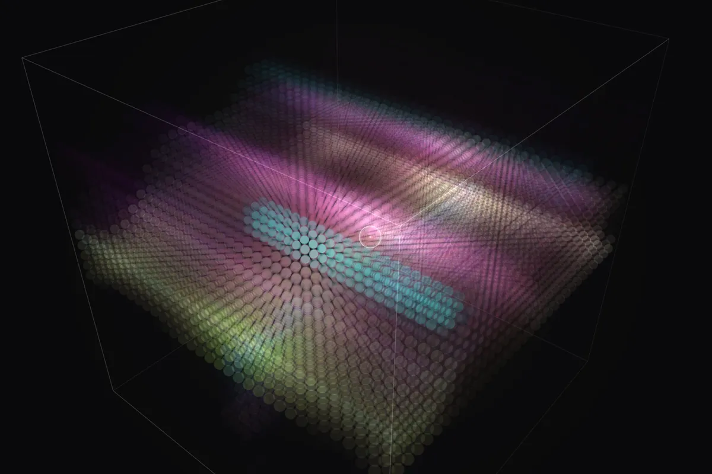

How it works
From a photo to an instrument.
What happens between dropping in a photo and playing it, one step at a time. Every picture on this page is drawn in your browser from the engine's own numbers for one photo: this sunset. Nothing here is a hidden sound found in the photo; it's a mapping designed for the app, and each step says which part of the instrument the picture sets.
01Made small
First, the photo is measured.
The app squeezes the photo into a picture of 256 × 64 pixels. That small picture is kept inside the sound, so the sound can be saved, shared and opened again without the photo.
It also shrinks it to 64 × 64 and takes five measures, each a plain number. They set the sound's broad strokes: how bright, how long it rings, how much shimmer.
The same photo always gives the same numbers. A photo that looks a little different gives numbers a little different. That is why similar photos sound related.
02Rows
A row of pixels is a wave.
Sound is air pushed back and forth. A synthesizer makes it by repeating one shape, a cycle, hundreds of times a second.
In Scan, the cycle is a row of the picture. The line reads its 256 pixels across and back again: bright pixels push the wave up, dark ones pull it down. Play the A above middle C and the row goes round 440 times a second.
The picture has 64 rows, so it holds 64 waves. Moving the line picks one; between two rows the sound blends. Across and Slant read columns or diagonals instead.
Each wave is kept in eight sizes, from 127 harmonics down to 1, so a high note never turns harsh.
03The strike
Its pattern is what rings.
Strike a bell or a marimba bar and it rings with several tones at once, its modes. The engine borrows that idea: it treats the photo's repeating stripes as if they were an object's modes.
The engine measures every stripe in the picture, at every angle and spacing (a 2D Fourier transform). Strong, regular stripes stand out as bright points. Each bright point becomes one tone.
- Its distance from the centre sets its pitch, with the spacing squeezed so the top tone lands between 6 and 14 times the note.
- The lowest is set to the note you play, at full level, so every key is in tune. If the photo has no octave, one is added.
- Its brightness sets how loud it is.
- Its sharpness sets how long it rings: a crisp pattern rings like glass, texture thuds like wood.
- Its angle sets where it sits, left to right.
| Tone | Times the note | On D3 it is | Loudness | Rings for |
|---|
The first eight of the sunset's 23 tones. The top one lands between 6 and 14 times the note: higher for a busy photo, lower for a calm one. Each tone is then nudged by up to 3 cents by the photo's signature (step 7).
04The sing
Its columns are what sings.
A held note needs a tone that keeps going after the strike. The engine reads the picture as 64 columns, and each column as a chord of 40 harmonics: the bottom pixel is the note itself, the next twice its pitch, then three times, up to 40 times at the top.
Brightness is level. Red in a column favours the odd harmonics, which sound hollow; blue favours the even ones, which sound fuller. Warm columns lean to one side.
While you hold a key, a line reads across the columns, left to right and back. For this sunset it takes 3.1 s each way, and the sing blooms in under the strike over a third of a second.
05The vowel
Its colour is a vowel.
Your mouth makes vowels with a few resonances. "Ee" has one high up, near 2,300 Hz; "oo" keeps them low. The engine borrows that idea with a single resonance set by the photo's average colour: a hint of a vowel, not a voice.
Going round the colour wheel, the resonance falls from about 2,400 Hz at pink to about 420 Hz at green, then rises again. The more colourful the photo, the stronger the vowel; a grey photo sings plain.
This sunset's colours average to a pink, at 332° on the wheel. Its vowel is "ee" at 2,361 Hz, at full strength.
06Shimmer
Its busy patches shimmer.
The picture is cut into 64 patches, 8 by 8. Each patch, read there and back, becomes one tiny cycle: a grain, a short flicker of sound at the note's pitch.
The grains start where your eye goes first (the engine finds it by spectral residual, a measure of what stands out) and wander from patch to patch.
How much shimmer you hear follows how busy the photo is. A calm photo has none. This sunset is fairly calm: 14 %.
07Signature
Every photo leaves a signature.
Two photos can look almost the same. The engine takes a SHA-256 of every pixel, a fingerprint that changes completely if a single pixel changes.
That fingerprint seeds the small details: each tone tuned within ±3 cents (mostly too little to hear on its own) and placed within ±5 %, the harmonics' phases, the exact path the line takes, where the grains wander. The character still comes from the picture; the signature guarantees that two different files never render the same audio, even when the difference is too small to hear.
The sound as a whole (the photo, every knob, every touch) has a fingerprint too, shown as a short code.
The first 8 bytes of the pixels' SHA-256, as the engine uses it.
The sunset sound as it comes in, settings and picture together. Shown in the next round of Sculpt.
08Four instruments
One photo, four instruments.
The same analysis can be played four ways. Each clip is the sunset alone playing D, A, D, F♯, then a low D. Same photo, same notes.
Struck
The strike, the sing and the shimmer above, together. Every photo starts as this.
Pluck
A string whose starting shape is the row the eye goes to first (row 38 here). Tuned so every key stays in tune.
Ladder bass
A saw wave, that row and a sub, through a ladder filter. One note at a time, sliding. Played an octave down.
Clean
The photo's six strongest harmonics and nothing else, no filter, with a vibrato that arrives late.
Rendered by the app's engine. Each clip was set to the same loudness afterwards, nothing else.
09Space
Two photos make a solid.
Give it a second photo and the first becomes the front of a block, the second its side. The engine fills in the block that looks like both, then treats it as a material: dark is heavy, colourful is stiff, busy is lossy.
Then it works out how that block vibrates. It treats the block as a simple vibrating material (a wave equation tuned so its axes sit at 1, 2 and 3 times the note) and solves for its 96 lowest modes on a 24 × 16 × 48 grid, with maths written for the app, in a little over a second on an M4 Mac. The solve is real; the block is a model.
A note strikes the block where your eye lands and plays the 40 modes that ring loudest there. A loop of light flies through the block; what it passes through, read 60 times a second, is the tone you hold.

10Sculpt
Then change what it's made of.
Sculpt opens the block. Paint it with materials (Lead is heavy and soft, Crystal light and stiff) and its tones move. While the brush is down the engine estimates them; when it lifts, it solves them exactly for its model of the block.
On one photo you paint the picture instead. Stripes you paint are a pattern, and a pattern is a new tone.
The next round coming counts what that means. For one set of photos: at least 1028,275 different sculpts you could save, though most would sound alike. And a rough count: allowing only steps of at least 5 cents in the 8 loudest tones and 3 dB in six harmonics, a block has about 1013 settings. A back-of-envelope figure, not a listening test.


–The fine print
What this is, and isn't.
- RedSynth Pad doesn't find a hidden sound in your photo. It's a mapping designed for the app: the picture's patterns, columns and colour each set one part of an instrument.
- Where it uses physics, it says so: the struck tones are modal synthesis, and a space is a model block whose vibrations are solved, not guessed.
- The same photos, knobs and touches always make the same sound. That is a promise about the maths, not a claim that nobody could ever make a sound like it. Change the photo and the instrument changes. Small changes make small differences, sometimes too small to hear.
- The big numbers are counts with the maths shown, not listening tests.
- Every figure on this page was computed by the app's engine for this sunset (and, for step 9, the sunset with an aurora). The demo pictures were made with maths for this site, and the clips' notes were chosen by hand.
- The engine is written from scratch in Rust and runs on your device. Nothing is sent anywhere.